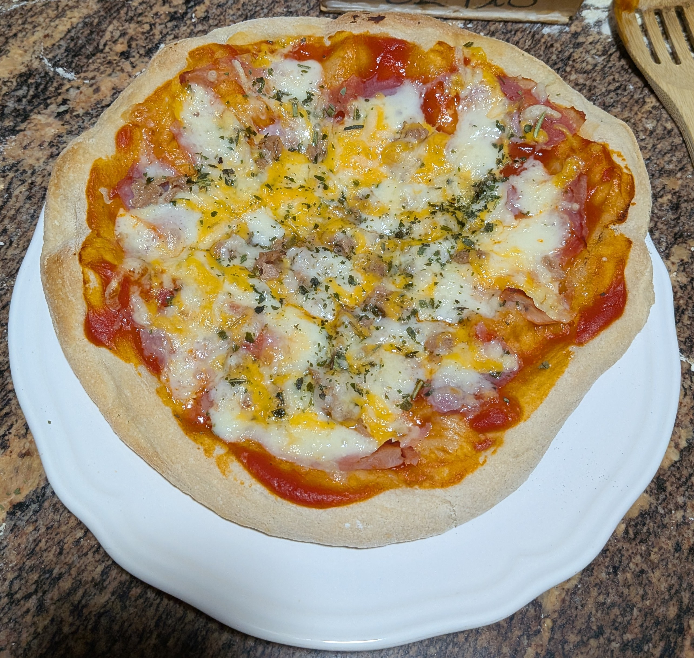

Receta de pizza

Características
- Requisito (opcional): Amasadora
- Dificultad: Difícil
- Raciones: 8
- Tiempo: 3h-5h + 12h de reposo
- Coste: Bajo
Ingredientes
| Ingrediente | Cantidad | Notas |
|---|---|---|
| Harina de fuerza | 1200 g | Recomendable mezclarlo con harina normal, sino echa 150g más |
| Harina normal | 150 g | |
| Azúcar | 40 g | |
| Sal | 30 g | |
| Levadura de panadería | 7 g | Un sobre de levadura de panadería |
| Agua | 800 ml | Preferiblemente tibia |
| Aceite de oliva | 40 g |
Elaboración
Empieza echando todos los ingredientes secos y los mueves un poco.
Luego echamos el agua y el aceite, y si tienes una amasadora, lo pones 5 minutos, sino, tienes que estar amasando aproximadamente unos 20 minutos.
Tras ese rato amasando, lo haces una bola, lo pones en un bol y lo tapas con papel film durante 30 minutos.
Pasados los 30 minutos, tienes que amasarlo otros 5 minutos a máquina o unos 20-30 minutos a mano, hasta que la masa se pueda estirar más suavemente sin romperse.
Luego lo vuelves a hacer una bola y lo dejas tapado con papel film 2 horas.
Pasadas las 2 horas, tienes que coger una báscula y te van a salir unas 8 bolas de 280g aproximadamente. Cuando tengas las 8 bolas, las pones en recipientes con espacio entre ellas
y previamente enharinado, los tapas con papel film y los dejas hasta el día siguiente en la nevera.
Si lo vas a hacer para ese mismo día no lo metas en la nevera, déjalas tapadas a temperatura ambiente un par de horas hasta cuando vayas a cocinar.
Ya cuando vayas a cocinarlas, sácalas 1 hora antes de la nevera para que se vayan ajustando a la temperatura, y pásados 30 minutos, precalienta el horno a la máxima temperatura, en mi caso, 270ºC
Ahora con las masas tienes primero que hacer la pizza, luego las horneas aproximadamente unos 3-4 minutos, a ser posible que no se toste mucho, muy poco doraditas. Luego las sacas del horno
y le echas los ingredientes que desees, posteriormente tienes que hornearlas hasta que estén tostadas, unos 5 minutos más.
¡¡Y a disfrutar!!